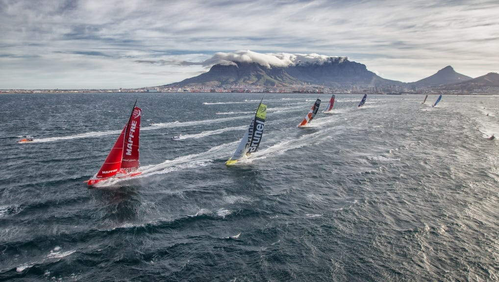

Copernican cap hornans


Since Copernicus, we know for sure that the world is a sphere turning around the sun and the whole universe is made of round material turning around but we human beings, don't like turning around because we interpret it as being stupid or just not knowing where to go. That’s how we express it in our everyday language when one says I am turning around so turning around got linked to stupid and misguidance but this kind of motion is a natural movement that we could not avoid and it is beneficial to us. That’s with this rotational motion that progress and evolution are made in all these fields that improved our everyday life, fields like science, art, and social living. That’s this motion that makes us the intelligent and smart creatures we are because when we find an error we have made and correct it, that one rotation cycle we have made and this cycle project us further from where we were. The feeling of boredness made me consume less techy content today by listening to this french radio program called les grosses tetes. Listening to this late journalist and humorist called Pierre Benichou
and his friend play a scene of a gay couple, a scene that was repulsing for me to say the truth but I said to myself that’s ok by trying to be empathic and second later this program led me to remember the Vendée Globe and see this trip around the world
a round trip that is done by brave and passionate persons that tell us how far we have bent the nature since Christopher Columbus because these boats
are far from those that the explorers were used to sail. To say that we have made huge technological progress when it comes to exploiting the strength and weakness of the ocean. Seeing these brave sailors made me think about how important it is to attach the correct naming to the right concept and turning around is one of those naming that we metaphorically use as a bad word which at the end misleads everyone who tries to avoid turning around like this misconception we have made with the Icarus story.
This world round trip after teaching me a great lesson about cooperating while competing and how brave a human being can be in front of a strong and powerful natural element like water taught me this great concept or reality about turning around, doing a revolution in term of motion is something we used to give less value and credit but is something inevitable and worth experiencing.
Is there a list of cap hornans out there? a cap hornan (french: Cap hornien) is someone who traveled from cap de bonne Esperance to cap horn by passing to cap Leeuwin.
PS: I am very willing to apply my mechanical engineering skill a day to build my own Imoca and to sail safely and freely in oceans and why not participate in this trip around the globe.